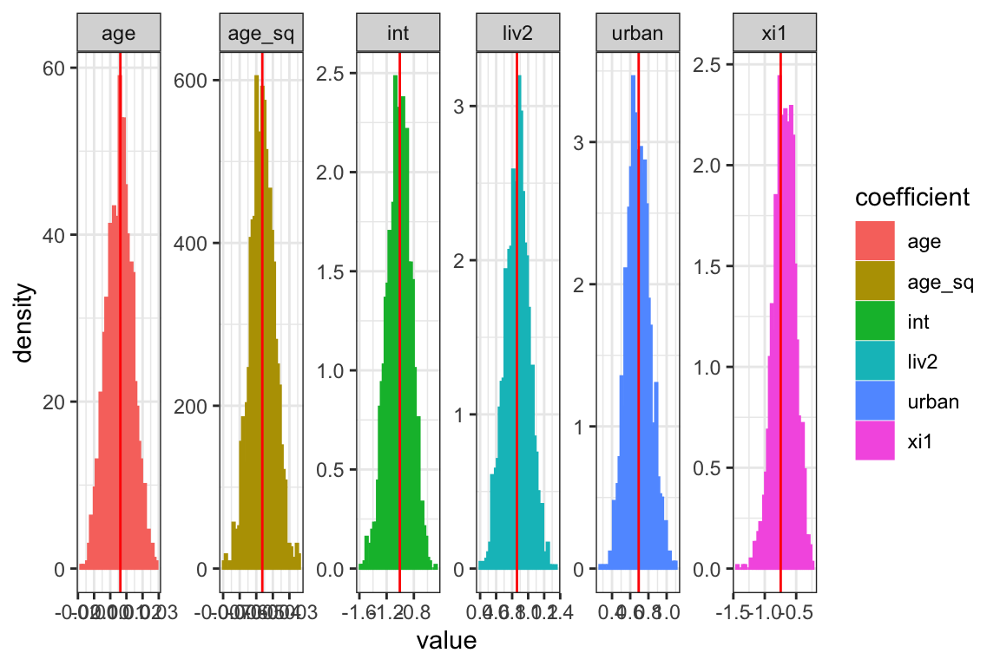

hmclearn package: Logistic Mixed Effects Regression Example
Samuel Thomas
2020-05-29
logistic_mixed_effects_hmclearn.RmdIntroduction
This vignette demonstrates fitting a Logistic mixed effects regression model via Hamiltonian Monte Carlo (HMC) using the hmclearn package.
For a mixed effects model with binary response, we let
\[ p = Pr(Y = 1 | X, Z) = [1 + e^{-X\beta-Zu}]^{-1} \] or
\[ \begin{aligned} \text{logit}[P(y = 1 | u)] &= X\beta + Zu \\ u &\sim N(0, G) \end{aligned} \]
library(hmclearn)
Logistic Mixed Effects Model Example Data
The user must define provide the design matrix directly for use in hmclearn. Our first step is to load the data and store the fixed effect design matrix \(X\), random effects design matrix \(Z\), and dependent variable vector \(y\).
We load drug Contraception data (Bates, et. al. 2014) and create the design matrices \(X\) and \(Z\) and dependent vector \(y\). For this model, the random effects design matrix \(Z\) is specified for a random intercept model.
Contraception <- mlmRev::Contraception Contraception$liv2 <- ifelse(Contraception$livch == "0", 0, 1) ########## # block diagonal Zi.lst <- split(rep(1, nrow(Contraception)), Contraception$district) Zi.lst <- lapply(Zi.lst, as.matrix) Z <- Matrix::bdiag(Zi.lst) Z <- as.matrix(Z) urban <- ifelse(Contraception$urban == "Y", 1, 0) X <- cbind(1, Contraception$age, Contraception$age^2, urban, Contraception$liv2) colnames(X) <- c("int", "age", "age_sq", "urban", "liv2") y <- ifelse(Contraception$use == "Y", 1, 0)
QR decomposition of design matrix
To facilitate a more efficient fitting of the model, we apply QR decomposition to the fixed effects design matrix \(X\).
Let \(\theta = R^*\beta\) (below). The HMC estimates \(\theta\), from which we can use the deterministic formula to determine \(\beta\)
\[ \begin{aligned} X &= Q^* R^* \\ Q^* &= Q \cdot \sqrt{n-1} \\ R^* &= \frac{1}{\sqrt{n-1}}R \\ X\beta &= Q^* R^* \beta \\ \beta &= R^{*^{-1}}\theta \end{aligned} \]
xqr <- qr(X) Q <- qr.Q(xqr) R <- qr.R(xqr) n <- nrow(X) X2 <- Q * sqrt(n-1) Rstar <- R / sqrt(n-1) Rstar_inv <- solve(Rstar) colnames(X2) <- c("int", "age", "age_sq", "urban", "liv2") # new intercept from QR decomposition diagval <- X2[1,1] ########## # block diagonal Zi.lst <- split(rep(diagval, nrow(Contraception)), Contraception$district) Zi.lst <- lapply(Zi.lst, as.matrix) Z2 <- Matrix::bdiag(Zi.lst) Z2 <- as.matrix(Z2)
Likelihood Derivation
First, we derive the likelihood for our logistic mixed effects regression model.
\[ \begin{aligned} p(y | X, Z, \beta, u) &= \prod_{i=1}^n\prod_{j=1}^m \left(\frac{1}{1 + e^{-X_{i}\beta - Z_{ij}u_i}}\right)^{y_{ij}} \left(\frac{e^{-X_i\beta - Z_{ij}u_i}}{1 + e^{-X_{i}\beta - Z_{ij}u_i}}\right)^{1-y_{ij}} \\ \log p(y|X,Z,\beta,u) &= \sum_{i=1}^n\sum_{j=1}^m -y_{ij}\log (1 + e^{-X_i\beta - Z_{ij}u_i}) + (1 - y_{ij})\log e^{-X_i\beta - Z_{ij}u_i} \\ &- (1-y_{ij})\log(1 + e^{-X_i\beta - Z_{ij}u_i}) \\ &= \sum_{i=1}^n \sum_{j=1}^m -y_{ij}\log (1 + e^{-X_i\beta - Z_{ij}u_i}) - (1-y_{ij})(X_{ij}\beta + Z_{ij}u_i) \\ &- (1-y_{ij})\log(1 + e^{-X_i\beta - Z_{ij}u_i}) \\ &= \sum_{i=1}^n\sum_{j=1}^m -y_{ij}\log(1 + e^{-X_i\beta-Z_{ij}u_i}) - (X_{ij}\beta + Z_{ij}u_i - \log(1+e^{-X_i\beta-Z_{ij}u_i})) \\ &+ y_{ij}(X_{ij}\beta + Z_{ij}u_i + \log(1 + e^{-X_i\beta - Z_{ij}u_i})) \\ &=\sum_{i=1}^n \sum_{j=1}^m -(1 - y_{ij})(X_{i}\beta + Z_{ij}u_i) - \log(1 + e^{-X_{i}\beta - Z_{ij}u_i}) \\ &= -(1 - y)^T(X\beta + Zu) - \log(1 + e^{-\sum_{i=1}^n \sum_{j=1}^m (X_i\beta + Z_{ij}u_i)}) \end{aligned} \]
Priors
Priors are needed for our parameters \(\beta\) and \(G\) to formulate the posterior.
We set a multivariate Normal prior for \(\beta\)
\[ \begin{aligned} \beta &\sim N(0, \Sigma_\beta) \\ &\sim N(0, \sigma_\beta^2I) \end{aligned} \]
with pdf
\[ \begin{aligned} p(\beta) &= \frac{1}{\sqrt{\lvert 2\pi \Sigma_\beta \rvert }}e^{-\frac{1}{2}\beta^T \Sigma_\beta^{-1}\beta} \\ \log p(\beta) &= -\frac{1}{2}\log(2\pi \lvert \Sigma_\beta \rvert) - \frac{1}{2}\beta^T \Sigma_\beta^{-1} \beta \\ &\propto -\frac{1}{2}\log \lvert\Sigma_\beta\rvert - \frac{1}{2}\beta^T \Sigma_\beta^{-1} \beta. \end{aligned} \]
Parameterization for \(G\)
The parameterization approach for this model uses a strategy recommended by Betancourt, Girolami (2013) to facilitate more efficient sampling in HMC.
Further, the uniform parameterization of the variance parameters is replaced by a half-t family of distributions per Gelman (2006), Prior distributions for Variance parameters in hierarchical models. This parameterization is well-behaved around 0, in contrast to inverse gamma, and provides flexibility for more informed priors than a uniform distribution.
We select a parameterization of \(G\) such that the likelihood and its gradient can be derived for HMC. To this end, we uses LDL decomposition of \(G\) to form a flexibile parameterization that can easily handle restrictions (Chan, Jelizkov 2009).
\[ \begin{aligned} u &\sim N(0, G) \\ G &= L D L^T \\ &= L D^{1/2} D^{1/2} L^T \\ \end{aligned} \]
Let \(\lambda_k\) where \(k = 1, ... p\) denote the diagonal entries of \(D^{1/2}\) and let \(a_{kj}\) where \(1 \leq j < k \leq p\) denote free elements of lower unitrangular matrix \(L\)
\[ D^{1/2} := \begin{pmatrix} \lambda_1 & 0 & ... & 0 \\ 0 & \lambda_2 & 0 ... & 0 \\ ... & ... & ... & ... \\ 0 & 0 & ... & \lambda_p \end{pmatrix}, L := \begin{pmatrix} 1 & 0 & 0 & ... & 0 \\ a_{21} & 1 & 0 & ... & 0 \\ a_{31} & a_{32} & 1 & ... & ... \\ ... & ... & ... & ... & ... \\ a_{p1} & a_{p2} & ... & ... & 1 \\ \end{pmatrix} \]
Also define \(\lambda := (\lambda_1, ..., \lambda_p)^T\) and \(a_k := (a_{k1}, ..., a_{k, k-1})^T\) and \(a := (a_2^T, ..., a_p^T)^T\)
Consider priors where \(k = 1...p\). The prior for \(\lambda_k\) is half-t per Gelman (2006).
\[ \begin{aligned} p(\lambda_k) &\sim \left(1 + \frac{1}{\nu}\left(\frac{\lambda_k}{A} \right)^2 \right)^{-(\nu+1)/2} \\ a|\lambda &\sim N(a_0, A_0) \end{aligned} \]
The hyperparameter \(a_0\) does not need to be zero, and \(A_0\) can be correlated and may depend on \(\lambda\). In this model, we define \(a\) independent of \(\lambda\).
Per Betancourt, Girolami (2013), we re-parameterize \(u\) using a standard normal parameterization we define as \(\tau = (\tau_1, ..., \tau_q)\). Here, \(u\) is a deterministic function of \(G\) and \(\tau\).
\[ \begin{aligned} \tau &\sim N(0, I_q) \\ u &:= L D^{1/2} \tau \\ &\sim N(0, LD^{1/2} I (L D^{1/2})^T) \\ &\sim N(0, L D^{1/2} D^{1/2} L^T) \\ &\sim N(0, G) \end{aligned} \]
The distribution of \(u\) therefore does not change with this parameterization. The intent of our re-parameterization is to allow \(G\) and \(\tau\) to be largely independent in the MCMC sampling.
Log posterior derivation
Now that we have the log likelihood and priors specified, we can derive the log posterior.
\[ \begin{aligned} p(\beta, u, G | y, X, Z) &\propto p(y | \beta, u, G) p(\beta, u, G) \\ &\propto p(y|\beta, u, G) p(\beta) p(u|G) p(G) \\ \log p(\beta, u, G | y, X, Z) &\propto \log p(y|\beta, u, G) + \log p(\beta) + \log p(u|G) + \log p(G) \end{aligned} \]
The log posterior is the sum of the log likelihood and the log of the prior for \(\beta\).
We have hyperpriors \(\lambda\) and \(a\) for \(G\). Also, we use a half-t prior for variance parameters per Gelman (2006).
\[ \begin{aligned} p(\lambda_k) &\sim \left(1 + \frac{1}{\nu}\left(\frac{\lambda_k}{A} \right)^2 \right)^{-(\nu+1)/2} \\ p_{\xi_k}(\xi_k) &= p_{\lambda_k}(g^{-1}(\xi_k)) \left\lvert \frac{d\lambda_k}{d\xi_k} \right\rvert \\ &= p_{\lambda_k} (e^{\xi_k})\lvert e^{\xi_k}\rvert \\ &\propto \left(1 + \frac{1}{\nu}\left(\frac{e^{\xi_k}}{A} \right)^2 \right)^{-(\nu+1)/2} e^{\xi_k}\\ &\propto \left(1 + \frac{1}{\nu}\left(\frac{e^{2\xi_k}}{A^2} \right) \right)^{-(\nu+1)/2} e^{\xi_k}\\ \log p(\xi_k) &\propto -\frac{\nu+1}{2}\log\left(1 + \frac{1}{\nu}\left(\frac{e^{2\xi_k}}{A^2} \right) \right) + \xi_k \\ \frac{\partial}{\partial\xi_k}\log p(\xi_k) &\propto -\frac{\nu+1}{2}\frac{1}{1 + \frac{1}{\nu}\left( \frac{e^{2\xi_k}}{A^2} \right)}\frac{2e^{2\xi_k}}{\nu A^2} + 1 \\ &\propto -(\nu+1)\frac{1}{1 + \nu A^2 e^{-2\xi_k}} + 1 \end{aligned} \]
We assign a relatively uniformative prior for \(a\)
\[ \begin{aligned} a_k &\sim N(0, A) \\ p(a_k) &\propto \lvert A \rvert^{-1/2} e^{-\frac{1}{2} a_k^T A^{-1} a_k} \\ \log p(a_k) &\propto -\frac{1}{2}a_k^T A^{-1} a_k \end{aligned} \]
The gradient with respect to \(a\):
Note that the following are equivalent
\[ \begin{aligned} L D^{1/2}\tau = D^{1/2} \tau + \widetilde{T} a \end{aligned} \]
Therefore, the portion of the log likelihood dependent on \(a\) becomes
\[ \begin{aligned} l(a, ..) &\propto -(1 - y)^T(X\beta + ZLD^{1/2}\tau) - \log(1 + e^{-\sum_{i=1}^n \sum_{j=1}^m (X_i\beta + Z_{ij}LD^{1/2}\tau_j)}) \\ &-\frac{1}{2}\log \lvert\Sigma_\beta\rvert - \frac{1}{2}\beta^T \Sigma_\beta^{-1} \beta \\ &-\sum_{k=1}^q \left(\frac{\nu_{\lambda_k}+1}{2}\log\left(1 + \frac{1}{\nu_{\lambda_k}} \frac{e^{2\xi_k}}{A_{\lambda_k}^2}\right)+ \xi_k\right)\\ &-\frac{1}{2} a^T A^{-1} a -\frac{1}{2} \tau^T \tau\\ &\propto -(1 - y)^T Z\widetilde{T} - \left(\frac{e^{-(X\beta + ZLD^{1/2}\tau)}}{1 + e^{-(X\beta + ZLD^{1/2}\tau)}}\right)^T Z\widetilde{T} - A^{-1}a \end{aligned} \]
Finally, we write the full log posterior
Note: we use \(A_\xi\) and \(A_a\) to distinguish between hyperpriors for \(\xi\) and for \(a\)
\[ \begin{aligned} \log p(\beta, u, G | y, X, Z) &\propto \log p(y|\beta, u, G) + \log p(\beta) + \log p(u|G) + \log p(G) \\ \log p(\beta, \gamma, \tau, \xi_1...\xi_q,a | y, X, Z) &\propto \log p(y | \beta, \tau, \gamma, \xi, a) + \log p(\beta) + \log p(\gamma)+ \log p(\tau) + \log p(\xi) + \log p(a) \\ &\propto -(1 - y)^T(X\beta + Zu) - \log(1 + e^{-\sum_{i=1}^n \sum_{j=1}^m (X_i\beta + Z_{ij}u_i)}) \\ &-\frac{1}{2}\log \lvert\Sigma_\beta\rvert - \frac{1}{2}\beta^T \Sigma_\beta^{-1} \beta \\ &-\sum_{k=1}^q \left(\frac{\nu_{\lambda_k}+1}{2}\log\left(1 + \frac{1}{\nu_{\lambda_k}} \frac{e^{2\xi_k}}{A_{\lambda_k}^2}\right)+ \xi_k\right)\\ &-\frac{1}{2} a^T A^{-1} a -\frac{1}{2} \tau^T \tau\\ &\propto -(1 - y)^T(X\beta + ZLD^{1/2}\tau) - \log(1 + e^{-\sum_{i=1}^n \sum_{j=1}^m (X_i\beta + Z_{ij}LD^{1/2}\tau_j)}) \\ &-\frac{1}{2}\log \lvert\Sigma_\beta\rvert - \frac{1}{2}\beta^T \Sigma_\beta^{-1} \beta \\ &-\sum_{k=1}^q \left(\frac{\nu_{\lambda_k}+1}{2}\log\left(1 + \frac{1}{\nu_{\lambda_k}} \frac{e^{2\xi_k}}{A_{\lambda_k}^2}\right)+ \xi_k\right)\\ &-\frac{1}{2} a^T A^{-1} a -\frac{1}{2} \tau^T \tau\\ \end{aligned} \]
The gradient of the log posterior must be derived for the leapfrog function
\[ \begin{aligned} \log p(\beta, \gamma, \tau, \xi_1...\xi_q,a | y, X, Z) &\propto -(1 - y)^T(X\beta + ZLD^{1/2}\tau) - \log(1 + e^{-\sum_{i=1}^n \sum_{j=1}^m (X_i\beta + Z_{ij}LD^{1/2}\tau_j)}) \\ &-\frac{1}{2}\log \lvert\Sigma_\beta\rvert - \frac{1}{2}\beta^T \Sigma_\beta^{-1} \beta \\ &-\sum_{k=1}^q \left(\frac{\nu_{\lambda_k}+1}{2}\log\left(1 + \frac{1}{\nu_{\lambda_k}} \frac{e^{2\xi_k}}{A_{\lambda_k}^2}\right)+ \xi_k\right)\\ &-\frac{1}{2} a^T A^{-1} a -\frac{1}{2} \tau^T \tau\\ \frac{\partial l}{\partial\beta} &\propto -(1-y)^T X + \left(\frac{e^{-(X\beta + Zu)}}{1 + e^{-(X\beta + Zu)}}\right)^T X - \Sigma_\beta^{-1}\beta\\ \frac{\partial l}{\partial \tau} &\propto -(1-y)^T ZLD^{1/2} + \left(\frac{e^{-(X\beta + Zu)}}{1 + e^{-(X\beta + Zu)}}\right)^T ZLD^{1/2} - \tau\\ \frac{\partial l}{\partial \xi_k} &= -(1-y)^T ZLJ^{kk}\tau + \left(\frac{e^{-(X\beta + Zu)}}{1 + e^{-(X\beta + Zu)}}\right)^T ZLJ^{kk}\tau- (\nu_{\lambda_k}+1)\frac{1}{1 + \nu_{\lambda_k}A_{\lambda_k}^2 e^{-2\xi_k}}+1 \\ \frac{\partial l}{\partial a} &= -(1 - y)^T Z\widetilde{T} - \left(\frac{e^{-(X\beta + ZLD^{1/2}\tau)}}{1 + e^{-(X\beta + ZLD^{1/2}\tau)}}\right)^T Z\widetilde{T} - A^{-1}a \end{aligned} \]
Run HMC for logistic regression model using QR decomposed design matrices
N <- 2e3 set.seed(412) initvals<- c(rep(0, 5), # fixed effects rnorm(60, mean=0, sd=0.1), # random intercepts 0) # variance of random intercepts vnames <- c(colnames(X), paste0("tau_int", 1:60), "xi1") epsvals <- c(5e-2, rep(1e-2, 4), rep(5e-2, 61)) t1.hmc <- Sys.time() f_hmc <- hmc(N = N, theta.init = initvals, epsilon = epsvals, L = 10, logPOSTERIOR = glmm_bin_posterior, glogPOSTERIOR = g_glmm_bin_posterior, varnames = vnames, parallel=TRUE, chains=2, param=list(y = y, X=X2, Z=Z2, n=60, nrandom=1, sig2beta=5, nuxi=1, Axi=25) ) t2.hmc <- Sys.time() t2.hmc - t1.hmc #> Time difference of 1.245038 mins
The acceptance ratio for each of the HMC chains is sufficiently high for an efficient simulation.
f_hmc$accept/N #> [1] 0.6725 0.6610
Trace plots provide a visual indication of stationarity. These plots indicate that the MCMC chains are reasonably stationary.
mcmc_trace(f_hmc, burnin=1000, pars=colnames(X))

Since we used QR decomposition to transform \(\beta\) prior to fitting via HMC, we need to reverse the transformation to obtain the original parameter scale.
# restore beta from Rstar in QR decomposition calc_beta <- function(theta_param, Rstarinv) { as.numeric(Rstarinv %*% theta_param) } # reverse qr decomposition f_hmc2 <- f_hmc f_hmc2$thetaCombined <- lapply(f_hmc$thetaCombined, function(xx) { xx[, 1:5] <- t(apply(xx[, 1:5], 1, calc_beta, Rstarinv=Rstar_inv)) xx })
The revised summary shows the posterior distribution after transformation back to the original scale.
summary(f_hmc2) #> Summary of MCMC simulation #> 2.5% 5% 25% 50% 75% #> int -1.328165722 -1.277647044 -1.109280079 -0.999863576 -0.888827498 #> age -0.008965682 -0.006636990 0.001223826 0.006634781 0.012013419 #> age_sq -0.006119732 -0.005885004 -0.005187770 -0.004666700 -0.004147218 #> urban 0.444287138 0.480588963 0.601023899 0.684229058 0.773484418 #> liv2 0.580177607 0.620764948 0.763105769 0.859213605 0.953718237 #> tau_int1 0.650702744 0.778417303 1.164458685 1.493153094 1.801371119 #> tau_int2 -1.385995050 -1.135107198 -0.461394699 0.013232363 0.463004388 #> tau_int3 -2.272212033 -1.984287919 -1.082269570 -0.476215578 0.138326771 #> tau_int4 -1.525291883 -1.333673185 -0.686578253 -0.281434627 0.127036347 #> tau_int5 -1.397324924 -1.186122711 -0.623829101 -0.223033603 0.161874755 #> tau_int6 -0.548529861 -0.369462861 0.125542283 0.469283834 0.818460848 #> tau_int7 -1.110465420 -0.801076549 -0.119550856 0.331668765 0.759994372 #> tau_int8 -1.397051264 -1.197752546 -0.644363214 -0.255746228 0.115553089 #> tau_int9 -0.890741994 -0.688786038 -0.087045757 0.343408973 0.771693135 #> tau_int10 -0.716380441 -0.528635836 0.208624475 0.740328957 1.322158856 #> tau_int11 0.060740919 0.318597559 1.039464314 1.550828142 2.102585679 #> tau_int12 -0.938921145 -0.763792208 -0.147211925 0.236643041 0.639965676 #> tau_int13 -1.362091466 -1.199163745 -0.557971776 -0.151629222 0.258134300 #> tau_int14 -2.270876683 -2.083499468 -1.588291764 -1.288014242 -1.016534839 #> tau_int15 -1.170383959 -0.954723985 -0.284306152 0.121720195 0.548724335 #> tau_int16 -2.576731620 -2.385153258 -1.752605540 -1.328647379 -0.862859765 #> tau_int17 -0.882099049 -0.659114914 -0.050306049 0.396282115 0.853425683 #> tau_int18 -0.923561794 -0.781919656 -0.254025331 0.114534111 0.478776934 #> tau_int19 -1.293767938 -1.150159954 -0.532745485 -0.099536059 0.337600386 #> tau_int20 -1.983133467 -1.737624874 -1.019632581 -0.507145007 0.016017177 #> tau_int21 -1.460586535 -1.274727101 -0.614599037 -0.124047803 0.372055445 #> tau_int22 -0.557395318 -0.331924329 0.366084304 0.809536863 1.268498099 #> tau_int23 -0.991816874 -0.761721052 -0.053693995 0.388750512 0.899136337 #> tau_int24 -0.616837621 -0.368702820 0.409250127 0.982529477 1.576851144 #> tau_int25 -1.239030005 -1.061137636 -0.633566044 -0.298294800 0.019094148 #> tau_int26 -1.385067792 -1.161215279 -0.492865108 -0.014604790 0.467821405 #> tau_int27 -0.112849506 0.097344104 0.641979014 1.038483381 1.446851509 #> tau_int28 -0.441357963 -0.218529580 0.295048483 0.681493562 1.043138736 #> tau_int29 -0.821782684 -0.634367022 -0.048467942 0.343080522 0.754468991 #> tau_int30 -1.827639301 -1.682107395 -1.163011773 -0.837011819 -0.518435572 #> tau_int31 -1.894066906 -1.702327347 -1.127736593 -0.688606367 -0.315317966 #> tau_int32 -0.356571863 -0.160790447 0.477740168 0.927332870 1.379474132 #> tau_int33 -1.184422388 -0.925177038 -0.275735991 0.188703298 0.653340698 #> tau_int34 -2.534728968 -2.354478031 -1.804962009 -1.423764003 -1.028618790 #> tau_int35 -1.565461124 -1.409366547 -0.897015341 -0.542058642 -0.179206456 #> tau_int36 -1.117698836 -0.905120344 -0.274972900 0.227585101 0.712202306 #> tau_int37 -2.248941814 -1.979279177 -1.158177003 -0.647712903 -0.164395934 #> tau_int38 -1.262400975 -1.052937105 -0.244810918 0.241447140 0.774683488 #> tau_int39 -2.143234963 -1.924149379 -1.344793210 -0.929989702 -0.524472968 #> tau_int40 -1.285337958 -1.137923018 -0.556810262 -0.181270959 0.191618271 #> tau_int41 -1.720110002 -1.558996000 -0.940808596 -0.508065955 -0.077154068 #> tau_int42 -2.170813685 -1.882256051 -1.029907465 -0.508414462 0.019125784 #> tau_int43 -2.042277398 -1.879579741 -1.382960855 -0.997096675 -0.619031698 #> tau_int44 -0.558794719 -0.377099592 0.266923202 0.678454890 1.115451907 #> tau_int45 -0.838903849 -0.621244783 -0.108401423 0.256277424 0.648036466 #> tau_int46 -2.054662549 -1.891139311 -1.385611931 -1.103256640 -0.781683790 #> tau_int47 -1.701280665 -1.486461717 -0.841285827 -0.341739100 0.142691973 #> tau_int48 -1.986125015 -1.766354184 -1.217616919 -0.838110884 -0.462209928 #> tau_int49 -1.303139081 -1.052037977 -0.231746029 0.397696314 1.038553020 #> tau_int50 -1.984140306 -1.743808795 -1.017068930 -0.564007819 -0.163629400 #> tau_int51 -1.295869132 -1.121959003 -0.604083622 -0.180782232 0.210424565 #> tau_int52 -1.501069362 -1.321126087 -0.820094837 -0.466502325 -0.129532940 #> tau_int53 -1.042653915 -0.785740483 -0.173829902 0.315455450 0.782036414 #> tau_int54 -0.818916491 -0.507652382 0.320791790 0.857793727 1.386477638 #> tau_int55 -2.258483458 -2.121088877 -1.612800758 -1.264369471 -0.910246382 #> tau_int56 -0.189010955 0.029894154 0.660345216 1.121675579 1.581029043 #> tau_int57 -1.778194793 -1.552875213 -0.973967628 -0.580734889 -0.158066610 #> tau_int58 -0.734679820 -0.526844797 0.284557983 0.883096979 1.485447327 #> tau_int59 -0.300084156 -0.128533503 0.459382472 0.868391662 1.284592473 #> tau_int60 -0.088935794 0.092548915 0.631495202 1.009199566 1.407675308 #> xi1 -1.034787290 -0.973896827 -0.804970212 -0.685226066 -0.575627585 #> 95% 97.5% rhat #> int -0.724277412 -0.680262890 0.9998207 #> age 0.019220314 0.022129614 1.0002852 #> age_sq -0.003459877 -0.003229654 1.0005233 #> urban 0.886416833 0.931365817 1.0000822 #> liv2 1.115958656 1.157335125 0.9997537 #> tau_int1 2.307676599 2.456569909 0.9999048 #> tau_int2 1.124251607 1.402368466 1.0082464 #> tau_int3 1.055768382 1.303683368 1.0005208 #> tau_int4 0.733224829 0.922146527 1.0012805 #> tau_int5 0.708839506 0.914663195 1.0034337 #> tau_int6 1.336218097 1.518418800 1.0006365 #> tau_int7 1.409615903 1.633547891 1.0014246 #> tau_int8 0.619521051 0.778204359 0.9998446 #> tau_int9 1.369771356 1.568567166 1.0016767 #> tau_int10 2.032389748 2.347371804 0.9998813 #> tau_int11 2.842413217 3.084583220 0.9999691 #> tau_int12 1.345164449 1.585453166 1.0021976 #> tau_int13 0.917832842 1.177461011 1.0007047 #> tau_int14 -0.656681660 -0.534648686 1.0018564 #> tau_int15 1.174653426 1.389938365 1.0008868 #> tau_int16 -0.183724471 0.014602287 1.0000376 #> tau_int17 1.573095972 1.781369646 1.0055671 #> tau_int18 1.036023291 1.248599504 1.0014087 #> tau_int19 0.979660534 1.170829069 1.0084411 #> tau_int20 0.776151781 0.985193659 1.0017853 #> tau_int21 1.064381292 1.298995728 0.9997943 #> tau_int22 1.923299021 2.163283836 1.0021433 #> tau_int23 1.661330414 1.843733353 1.0005738 #> tau_int24 2.477070710 2.756989753 0.9997550 #> tau_int25 0.474752407 0.633333902 1.0027585 #> tau_int26 1.143872348 1.371293967 1.0227887 #> tau_int27 2.030690559 2.224879607 0.9997744 #> tau_int28 1.585917916 1.794105301 1.0068137 #> tau_int29 1.413124864 1.669362716 0.9998531 #> tau_int30 -0.073915338 0.060658913 1.0017997 #> tau_int31 0.302326278 0.517101619 1.0002011 #> tau_int32 2.064544200 2.309974360 1.0028150 #> tau_int33 1.365490807 1.543265671 0.9998595 #> tau_int34 -0.513699047 -0.333088293 1.0006092 #> tau_int35 0.326579887 0.483340474 0.9997505 #> tau_int36 1.419965817 1.642426717 1.0021713 #> tau_int37 0.562999674 0.777086752 1.0001808 #> tau_int38 1.542073481 1.766743111 1.0022757 #> tau_int39 0.040153086 0.243983972 1.0008833 #> tau_int40 0.778720600 0.962483679 1.0004887 #> tau_int41 0.540556703 0.728233592 1.0069464 #> tau_int42 0.788143819 1.003859140 1.0001287 #> tau_int43 -0.109659347 0.066047375 0.9997655 #> tau_int44 1.770226903 1.978210960 1.0026608 #> tau_int45 1.156988209 1.367269373 1.0042179 #> tau_int46 -0.353449641 -0.241193331 1.0062258 #> tau_int47 0.858251561 1.099810723 1.0032732 #> tau_int48 0.081069413 0.270132047 0.9997629 #> tau_int49 1.922227286 2.169431568 1.0210794 #> tau_int50 0.532731966 0.819238253 1.0039100 #> tau_int51 0.797064392 0.975137514 1.0196920 #> tau_int52 0.345910704 0.535510001 1.0010104 #> tau_int53 1.462459193 1.665503632 1.0037925 #> tau_int54 2.093803238 2.294709969 1.0104276 #> tau_int55 -0.383464519 -0.233721708 1.0006707 #> tau_int56 2.302505945 2.505857499 1.0020766 #> tau_int57 0.412621230 0.607822344 1.0006013 #> tau_int58 2.331155165 2.516913192 0.9997938 #> tau_int59 1.942525363 2.215193107 1.0049713 #> tau_int60 2.071293169 2.322629796 0.9997783 #> xi1 -0.419734188 -0.370366706 0.9997694
We create trace plots on the transformed simulation data.
mcmc_trace(f_hmc2, burnin=1000, pars=colnames(X))

Frequentist model
To compare results, we first fit a logistic mixed effects model using the frequentist package lme4 (Bates et. al. 2015).
library(lme4) #> Loading required package: Matrix f <- glmer(use ~ age + I(age^2) + urban + liv2 + (1 | district), data=Contraception, family=binomial, control=glmerControl(optCtrl=list(maxfun=20000))) #> Warning in checkConv(attr(opt, "derivs"), opt$par, ctrl = control$checkConv, : Model is nearly unidentifiable: very large eigenvalue #> - Rescale variables? summary(f) #> Generalized linear mixed model fit by maximum likelihood (Laplace #> Approximation) [glmerMod] #> Family: binomial ( logit ) #> Formula: use ~ age + I(age^2) + urban + liv2 + (1 | district) #> Data: Contraception #> Control: glmerControl(optCtrl = list(maxfun = 20000)) #> #> AIC BIC logLik deviance df.resid #> 2385.2 2418.6 -1186.6 2373.2 1928 #> #> Scaled residuals: #> Min 1Q Median 3Q Max #> -1.8151 -0.7620 -0.4619 0.9518 3.1033 #> #> Random effects: #> Groups Name Variance Std.Dev. #> district (Intercept) 0.2247 0.474 #> Number of obs: 1934, groups: district, 60 #> #> Fixed effects: #> Estimate Std. Error z value Pr(>|z|) #> (Intercept) -1.0063737 0.1691107 -5.951 2.67e-09 *** #> age 0.0062561 0.0078848 0.793 0.428 #> I(age^2) -0.0046353 0.0007207 -6.432 1.26e-10 *** #> urbanY 0.6929220 0.1206566 5.743 9.31e-09 *** #> liv2 0.8603821 0.1483014 5.802 6.57e-09 *** #> --- #> Signif. codes: 0 '***' 0.001 '**' 0.01 '*' 0.05 '.' 0.1 ' ' 1 #> #> Correlation of Fixed Effects: #> (Intr) age I(g^2) urbanY #> age 0.529 #> I(age^2) -0.533 -0.506 #> urbanY -0.259 -0.032 0.020 #> liv2 -0.801 -0.565 0.345 0.094 #> convergence code: 0 #> Model is nearly unidentifiable: very large eigenvalue #> - Rescale variables?
freqvals <- c(as.numeric(fixef(f)), as.numeric(ranef(f)$district[, 1]), log(sqrt(as.numeric(VarCorr(f)[1]))))
Histograms of the posterior distribution show that Bayesian parameter estimates align with frequentist estimates. The cols parameter specifies the parameters to be displayed in diagplots, based on the order provided to the hmc function.
diagplots(f_hmc2, burnin=1000, comparison.theta=c(freqvals[1:ncol(X)], freqvals[length(freqvals)]), cols=c(1:ncol(X), length(initvals))) #> $histogram

Source
Steele, F., Diamond, I. And Amin, S. (1996). Immunization uptake in rural Bangladesh: a multilevel analysis. Journal of the Royal Statistical Society, Series A (159): 289-299.
References
Bates, D., M"{a}chler, M., Bolker, B., & Walker, S. (2015). Fitting linear mixed-effects models using lme4. Journal of Statistical Software 67(1)
Bates, D., M"{a}chler, M., & Bolker, B. (2014). mlmRev: Examples from multilevel modelling software review. R package version, 1.
Agresti, A. (2015). Foundations of linear and generalized linear models. John Wiley & Sons. ISBN: 978-1-118-73003-4